Advanced Visualization and Marker Analysis
Chomchon Uansiri
2026-10-06
Source:vignettes/OHMmy-advanced-visualization.Rmd
OHMmy-advanced-visualization.RmdOverview
Once cells are clustered, the next step is to interpret them. OHMmy wraps the most common figures into functions that save a publication-ready file and return the ggplot/patchwork object, so you can keep customising in R.
| Theme | Functions |
|---|---|
| Colours | make_cluster_palette() |
| Embedding overlays |
PlotDimByFactors(), plot_combined()
|
| Distributions |
plot_violin_qc_single(),
extract_binned_expression()
|
| Clustered dot plots |
plot_dot_dendro(),
plot_dot_dendro_split(),
plot_dot_dendro_multi()
|
| Co-expression |
plot_blend_nebulosa(),
.blend_feature_plot_v5()
|
| Lineage resolution | score_consensus() |
library(Seurat)
library(OHMmy)
library(patchwork)
library(ggplot2)
source("ohmmy-vignette-helpers.R")
pbmc <- load_pbmc3k_ohmmy() # built in "Data Processing, Integration, and Clustering"
out_dir <- file.path(tempdir(), "OHMmy-advanced-visualization")
dir.create(out_dir, recursive = TRUE, showWarnings = FALSE)
table(pbmc$cell_type)
#>
#> CD4 T CD8 T NK B CD14 Mono FCGR3A Mono
#> 1168 298 141 341 478 178
#> DC
#> 341. Colour palettes for many clusters
make_cluster_palette() returns n maximally
distinct colours from curated qualitative palettes
("kelly", "alphabet",
"polychrome") or from a blend of RColorBrewer sets
("auto"). When n is larger than the palette,
it interpolates.
pal_df <- do.call(rbind, lapply(c("auto", "kelly", "alphabet", "polychrome"), function(p) {
data.frame(palette = p, i = 1:16, col = make_cluster_palette(16, palette = p))
}))
ggplot(pal_df, aes(i, palette, fill = col)) +
geom_tile(colour = "white", linewidth = 0.8) +
scale_fill_identity() +
labs(x = NULL, y = NULL) +
theme_minimal() +
theme(axis.text.x = element_blank(), panel.grid = element_blank())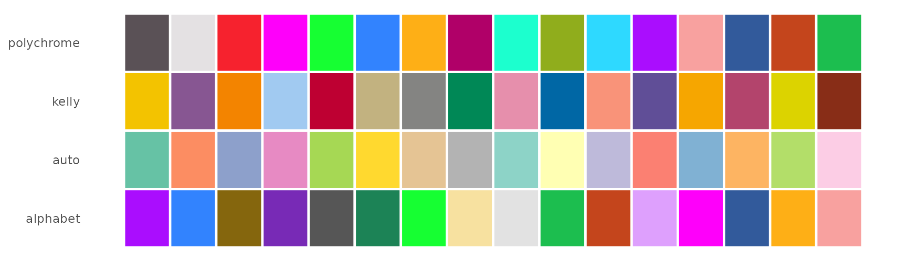
2. Embedding overlays
One UMAP per metadata column
PlotDimByFactors() draws one DimPlot per
metadata column, saves each to disk and returns the plots as a named
list.
dim_plots <- PlotDimByFactors(
seurat_obj = pbmc,
factors = c("cell_type", "seurat_clusters", "batch", "Phase"),
sample_name = "pbmc3k",
reduction = "umap.har",
output_dir = file.path(out_dir, "dimplots"),
dpi = 100,
verbose = FALSE
)
names(dim_plots)
#> [1] "cell_type" "seurat_clusters" "batch" "Phase"
dim_plots$cell_type <- dim_plots$cell_type +
scale_colour_manual(values = make_cluster_palette(nlevels(pbmc$cell_type), "kelly"))
wrap_plots(dim_plots, ncol = 2) & NoLegend()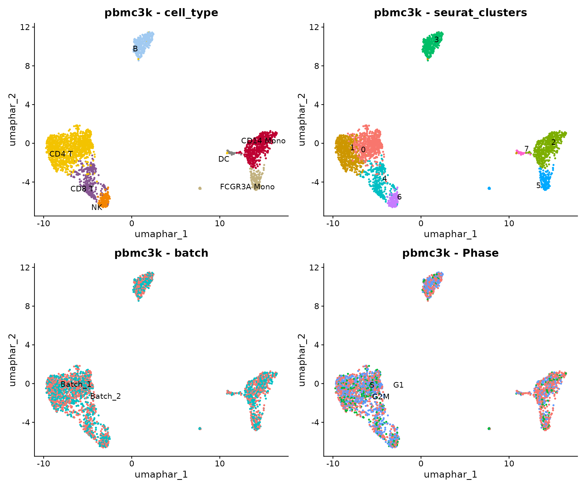
Feature plots paired with density estimates
Sparse genes are hard to read on a standard FeaturePlot.
plot_combined() places each feature next to its
kernel-density estimate (Nebulosa), using a Seurat v5-safe
implementation. Features can be genes or numeric metadata
columns, and each list element becomes one saved figure.
feature_sets <- list(
Lymphoid = c("CD3E", "MS4A1", "GNLY"),
Myeloid = c("CD14", "FCGR3A", "FCER1A"),
QC = c("nCount_RNA", "pct_counts_mt", "percent.ribo")
)
combined <- plot_combined(
seurat_obj = pbmc,
cluster_col = "cell_type",
genes_list = feature_sets,
sample_name = "pbmc3k",
reduction = "umap.har",
output_dir = file.path(out_dir, "combined"),
dpi = 72,
verbose = FALSE
)
names(combined$combined_plots)
#> [1] "Lymphoid" "Myeloid" "QC"
combined$combined_plots$Lymphoid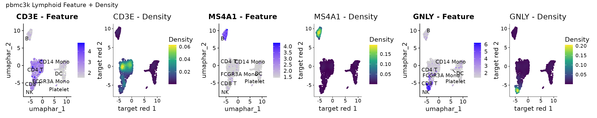
combined$combined_plots$QC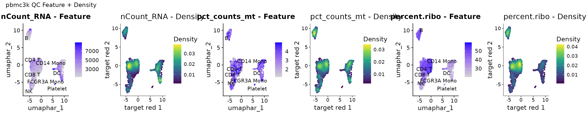
3. Distributions across clusters
Violin plots for QC metrics and genes
plot_violin_qc_single() saves one figure for QC metadata
and one for genes, grouped by any identity column.
plot_violin_qc_single(
seurat_obj = pbmc,
sample_name = "pbmc3k",
qc_meta_features = c("nCount_RNA", "nFeature_RNA", "pct_counts_mt"),
gene_features = c("CD3E", "CD8A", "GNLY", "MS4A1", "CD14", "FCGR3A"),
res_col = "cell_type",
output_dir = file.path(out_dir, "violins"),
dpi = 90
)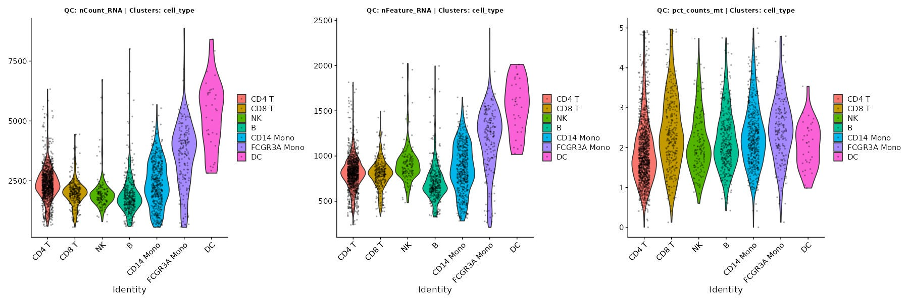
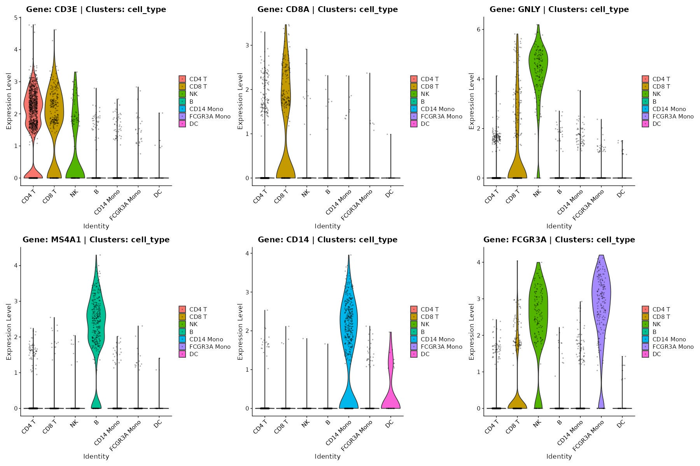
Discretising expression into Low / Int / High
extract_binned_expression() returns the average
expression and percent expressed per group. For each gene it then bins
the groups into terciles (Low, Int,
High). This is useful for writing marker tables or for
defining “marker-high” populations. The terciles are relative to the
groups being compared: with eight cell types, for example, the three
highest-expressing groups of each gene are labelled
High.
binned <- extract_binned_expression(
seurat_obj = pbmc,
gene_list = c("CD3E", "CD8A", "GNLY", "MS4A1", "CD14", "FCGR3A", "FCER1A", "PPBP"),
group_col = "cell_type"
)
head(binned)
#> # A tibble: 6 × 5
#> Cluster Gene AvgExpression PctExpress Expression_Level
#> <fct> <fct> <dbl> <dbl> <fct>
#> 1 CD4 T CD3E 7.55 77.0 High
#> 2 CD4 T CD8A 0.731 11.1 High
#> 3 CD4 T GNLY 0.571 10.4 Int
#> 4 CD4 T MS4A1 0.203 4.97 Low
#> 5 CD4 T CD14 0.0838 1.80 Int
#> 6 CD4 T FCGR3A 0.207 4.54 Low
ggplot(binned, aes(Gene, Cluster, fill = Expression_Level)) +
geom_tile(colour = "white") +
geom_text(aes(label = round(PctExpress)), size = 3) +
scale_fill_manual(values = c(Low = "#f0f0f0", Int = "#9ecae1", High = "#08519c")) +
labs(x = NULL, y = NULL, fill = "Tercile", caption = "Numbers: % of cells expressing") +
theme_minimal()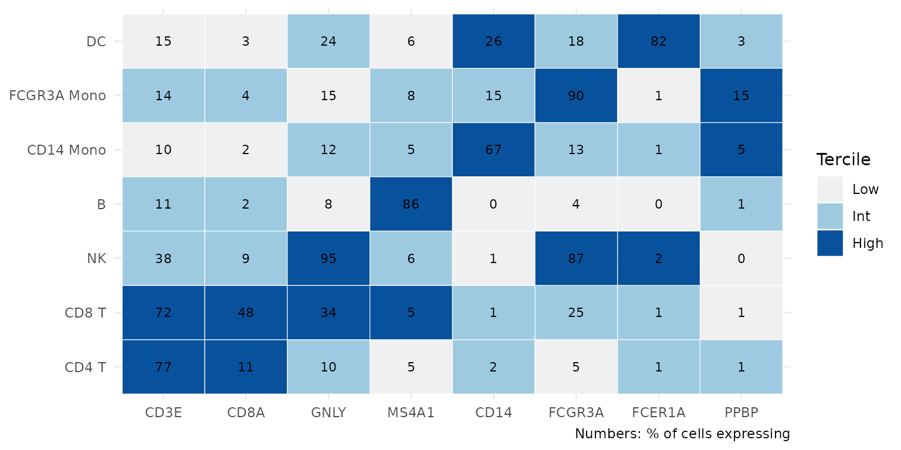
4. Hierarchically clustered dot plots
The dot-plot family takes a two-column data frame,
feature_df, that maps genes (feature) to
panels (group). Groups are matched by
prefix: with prefix = "PBMC", every group
starting with "PBMC_" is plotted. This lets one table hold
several marker panels, for example PBMC_* and
Tcell_*.
feature_df <- data.frame(
group = paste0("PBMC_", rep(names(pbmc_marker_sets), lengths(pbmc_marker_sets))),
feature = unlist(pbmc_marker_sets, use.names = FALSE)
)
head(feature_df, 8)
#> group feature
#> 1 PBMC_CD4 T IL7R
#> 2 PBMC_CD4 T CCR7
#> 3 PBMC_CD4 T LDHB
#> 4 PBMC_CD4 T CD3E
#> 5 PBMC_CD4 T MAL
#> 6 PBMC_CD8 T CD8A
#> 7 PBMC_CD8 T CD8B
#> 8 PBMC_CD8 T CD3D
plot_dot_dendro(): genes and clusters clustered
together
Genes expressed in fewer than pct_threshold % of cells
in every group are dropped. Rows and columns are then ordered by
hierarchical clustering, and both dendrograms are drawn. The function
also saves standalone dendrograms and a text file of the clustered gene
order.
p_dot <- plot_dot_dendro(
seurat_obj = pbmc,
meta_col = "cell_type",
feature_df = feature_df,
prefix = "PBMC",
pct_threshold = 10,
output_dir = file.path(out_dir, "dot_dendro")
)
p_dot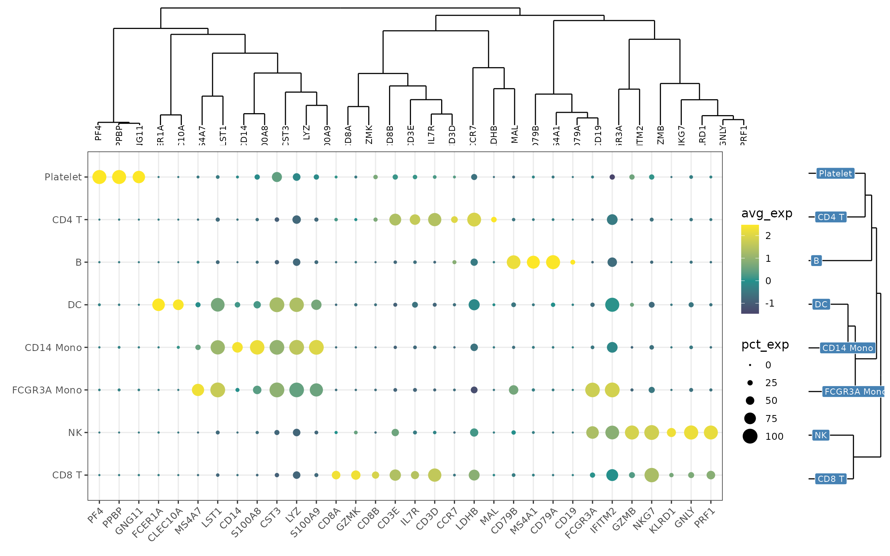
plot_dot_dendro_split(): large panels in chunks
With long marker lists, plot_dot_dendro_split() keeps
the global clustering but splits the gene axis into
chunks of max_genes_per_plot. The same cluster dendrogram
is attached to every chunk.
extended_markers <- list(
T_cell = c("CD3D", "CD3E", "CD2", "IL7R", "CCR7", "SELL", "LEF1", "TCF7", "CD8A", "CD8B", "GZMK"),
NK = c("GNLY", "NKG7", "KLRD1", "KLRF1", "PRF1", "GZMB", "GZMH", "FCGR3A"),
B = c("MS4A1", "CD79A", "CD79B", "BANK1", "TCL1A", "HLA-DQA1"),
Myeloid = c("CD14", "LYZ", "S100A8", "S100A9", "VCAN", "MS4A7", "LST1", "CDKN1C", "FCER1A", "CST3"),
Platelet = c("PPBP", "PF4", "GNG11")
)
feature_df_ext <- data.frame(
group = paste0("PBMCext_", rep(names(extended_markers), lengths(extended_markers))),
feature = unlist(extended_markers, use.names = FALSE)
)
split_plots <- plot_dot_dendro_split(
seurat_obj = pbmc,
meta_col = "cell_type",
feature_df = feature_df_ext,
prefix = "PBMCext",
pct_threshold = 10,
max_genes_per_plot = 20,
output_dir = file.path(out_dir, "dot_split")
)
length(split_plots)
#> [1] 2
split_plots[[1]]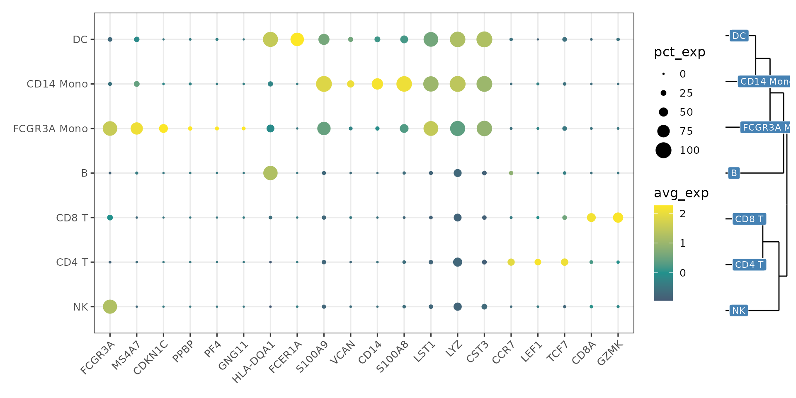
split_plots[[2]]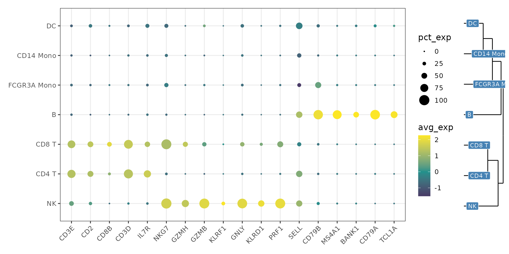
plot_dot_dendro_multi(): several groupings in one
clustering
plot_dot_dendro_multi() stacks the dot-plot summaries of
several metadata columns into one matrix before
clustering. Here, plotting the marker-based cell_type
labels next to the unsupervised seurat_clusters shows
directly which clusters each label absorbed. Rows are named
<group>_<column>.
multi_df <- plot_dot_dendro_multi(
seurat_obj = pbmc,
meta_cols = c("cell_type", "seurat_clusters"),
feature_df = feature_df,
prefix = "PBMC",
pct_threshold = 10,
output_dir = file.path(out_dir, "dot_multi"),
save_options = c("combined", "gene_list")
)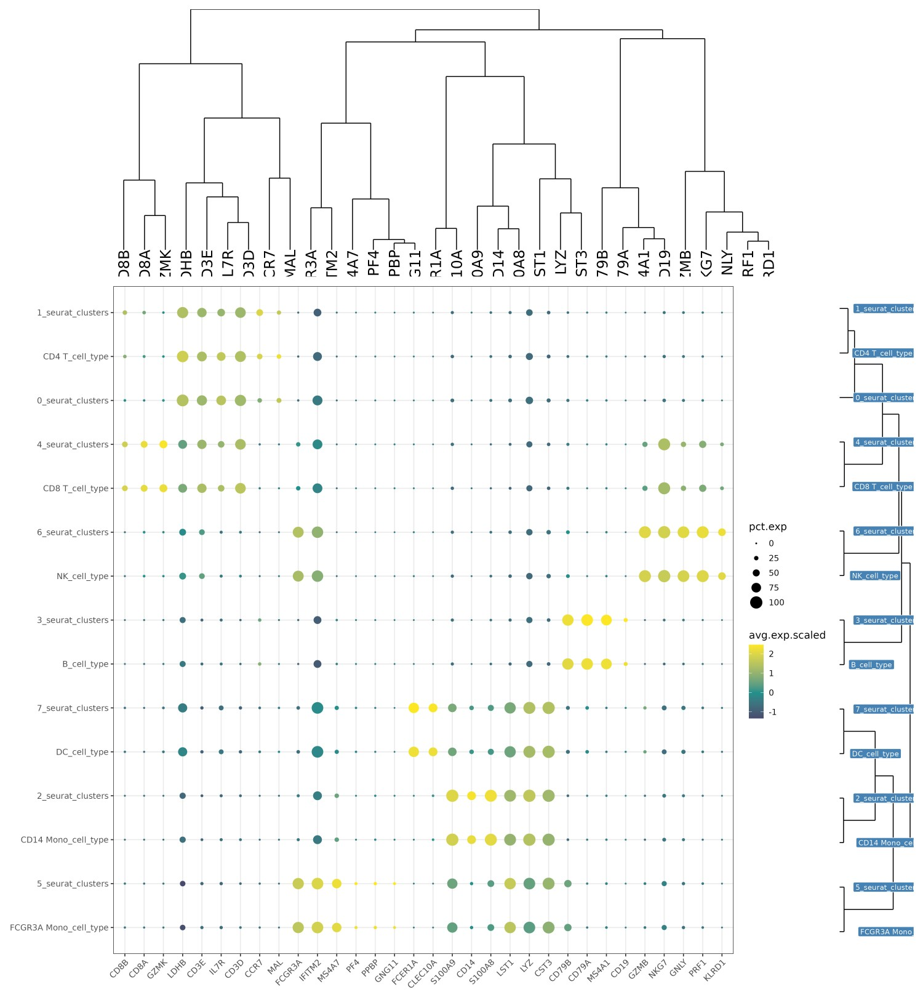
head(multi_df[, c("cluster_var", "feature", "avg.exp.scaled", "pct.exp")])
#> cluster_var feature avg.exp.scaled pct.exp
#> IL7R...1 CD4 T_cell_type IL7R 1.6004838 66.43836
#> CCR7...2 CD4 T_cell_type CCR7 1.9228209 36.38699
#> LDHB...3 CD4 T_cell_type LDHB 1.7808176 92.72260
#> CD3E...4 CD4 T_cell_type CD3E 1.3155181 76.96918
#> MAL...5 CD4 T_cell_type MAL 2.2501354 27.31164
#> CD8A...6 CD4 T_cell_type CD8A 0.2059775 11.130145. Co-expression: blend and density plots
plot_blend_nebulosa() produces one row per gene pair
with the two single-gene panels, their colour blend, a 2-D colour key,
and a Nebulosa density estimate for each gene. Cells below
blend_threshold (after scaling to 0 to 1) are shown as
background, which keeps sparse genes readable. All pairs are stacked
into one saved figure.
blend <- plot_blend_nebulosa(
seurat_obj = pbmc,
cluster_col = "cell_type",
gene_pairs = list(c("CD3E", "GNLY"), c("CD14", "FCGR3A")),
sample_name = "pbmc3k",
reduction = "umap.har",
blend_threshold = 0.1,
width = 24,
dpi = 72,
output_dir = file.path(out_dir, "blend"),
verbose = FALSE
)
blend$dimensions
#> $width
#> [1] 24
#>
#> $height
#> [1] 7.2
blend$plot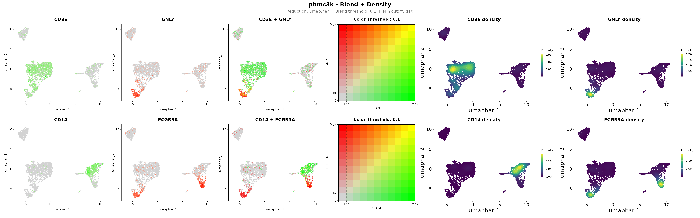
The CD3E/GNLY row separates T cells (green), NK cells (red) and the cytotoxic CD8 T cells that express both (yellow). The CD14/FCGR3A row shows the two monocyte subsets and the intermediate cells between them.
The four-panel blend is also available on its own as
.blend_feature_plot_v5(), a Seurat v5-compatible
replacement for FeaturePlot(blend = TRUE).
.blend_feature_plot_v5(
pbmc, gene1 = "CD8A", gene2 = "GZMK", reduction = "umap.har",
cols = c("lightgrey", "#1b9e77", "#d95f02"), blend_threshold = 0.15, pt_size = 0.6
)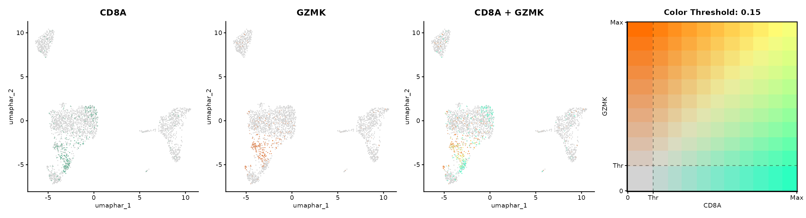
6. Resolving CD8 T cells from NK cells with
score_consensus()
Cytotoxic CD8 T cells and NK cells share much of their effector
programme and are often mixed in clustering.
score_consensus() compares one or more CD8
signature scores with an NK signature score
for each cell. It labels a cell CD8 when z(CD8) - z(NK)
exceeds a cutoff, which can be fixed ("fixed"), the density
valley ("trough"), or the decision boundary of a
two-component Gaussian mixture ("gmm"). Two CD8 signatures
act as primary and confirm scores, and
disagreements are flagged as ambiguous. Bootstrapping reports how stable
the cutoff is.
Any per-cell score can be used, such as AddModuleScore()
or UCell. Here we score the CD8 T and NK cells with
AddModuleScore().
cyto <- subset(pbmc, subset = cell_type %in% c("CD8 T", "NK"))
score_sets <- list(
CD8_core = c("CD8A", "CD8B"),
CD8_TCR = c("CD3D", "CD3E", "CD3G", "CD8A", "CD8B", "LCK"),
NK_score = c("GNLY", "KLRD1", "KLRF1", "FCGR3A", "NCAM1", "TYROBP", "FCER1G")
)
for (s in names(score_sets)) {
cyto <- AddModuleScore(cyto, features = list(score_sets[[s]]), name = s, seed = 1)
names(cyto@meta.data)[names(cyto@meta.data) == paste0(s, "1")] <- s
}With method = "gmm", the cutoff is the decision boundary
of a two-component Gaussian mixture fitted with mclust,
which only needs to be installed. If no cutoff can be estimated,
fixed_cut is used instead, and the fallback
column of cons$cutoffs reports this.
cons <- score_consensus(
obj = cyto,
cd8_cols = c("CD8_TCR", "CD8_core"),
nk_col = "NK_score",
method = "gmm",
n_boot = 100,
boot_target = "cutoff",
make_plots = TRUE,
plot_n = 300,
out_dir = file.path(out_dir, "cd8_vs_nk")
)
cons$cutoffs
#> variant cutoff fallback med_diff q05_diff q95_diff frac_cd8
#> 1 CD8_TCR -0.8432246 FALSE 0.60889522 -2.88979 2.367464 0.6514806
#> 2 CD8_core -1.2859800 FALSE 0.07507069 -2.44122 2.751788 0.6924829
cons$agreement
#> CD8_TCR CD8_core
#> CD8_TCR 1.0000000 0.9453303
#> CD8_core 0.9453303 1.0000000
cons$bootstrap$summary
#> variant target observed mean sd ci_lo ci_hi fb_rate
#> 1 CD8_TCR cutoff -0.8432246 -0.7863805 0.1892429 -1.111310 -0.4723863 0
#> 2 CD8_core cutoff -1.2859800 -1.2765134 0.1086915 -1.497219 -1.0857047 0Both variants get a data-driven cutoff
(fallback = FALSE), and the bootstrap confidence intervals
show how stable it is. The consensus agrees with the cluster-level
annotation for the large majority of cells. Most of the remaining cells
are flagged as Ambiguous, because the primary and confirmatory
CD8 signatures disagree on them. These cells are good candidates for
closer inspection:
table(consensus = cons$consensus, annotation = cyto$cell_type)
#> annotation
#> consensus CD4 T CD8 T NK B CD14 Mono FCGR3A Mono DC
#> Ambiguous_CD8_confirm 0 7 14 0 0 0 0
#> Ambiguous_CD8_primary 0 2 1 0 0 0 0
#> CD8 0 274 9 0 0 0 0
#> NK 0 15 117 0 0 0 0
(cons$plots$Violin_CD8_TCR) /
(cons$plots$Primary_vs_Confirm | cons$plots$Bootstrap_ForestPlot)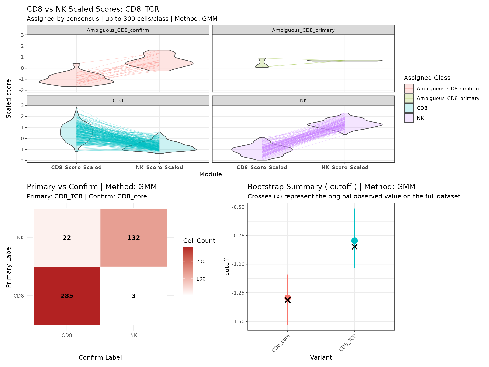
The labels are also written to the object’s metadata (prefix
CD8vNK_), ready for plotting:
grep("^CD8vNK_", colnames(cons$obj@meta.data), value = TRUE)
#> [1] "CD8vNK_diff_CD8_TCR" "CD8vNK_label_CD8_TCR"
#> [3] "CD8vNK_cd8scale_CD8_TCR" "CD8vNK_diff_CD8_core"
#> [5] "CD8vNK_label_CD8_core" "CD8vNK_cd8scale_CD8_core"
#> [7] "CD8vNK_nkscale" "CD8vNK_consensus"
DimPlot(cons$obj, reduction = "umap.har", group.by = "CD8vNK_consensus") +
FeaturePlot(cons$obj, reduction = "umap.har", features = "CD8vNK_diff_CD8_TCR") +
scale_colour_gradient2(low = "#b2182b", mid = "grey90", high = "#2166ac")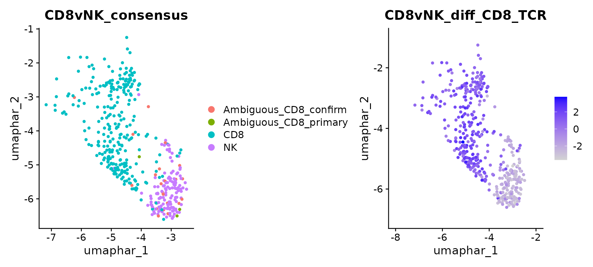
Session information
sessionInfo()
#> R version 4.6.1 (2026-06-24)
#> Platform: x86_64-pc-linux-gnu
#> Running under: Ubuntu 22.04.5 LTS
#>
#> Matrix products: default
#> BLAS: /usr/lib/x86_64-linux-gnu/openblas-pthread/libblas.so.3
#> LAPACK: /usr/lib/x86_64-linux-gnu/openblas-pthread/libopenblasp-r0.3.20.so; LAPACK version 3.10.0
#>
#> locale:
#> [1] LC_CTYPE=C.UTF-8 LC_NUMERIC=C LC_TIME=C.UTF-8
#> [4] LC_COLLATE=C.UTF-8 LC_MONETARY=C.UTF-8 LC_MESSAGES=C.UTF-8
#> [7] LC_PAPER=C.UTF-8 LC_NAME=C LC_ADDRESS=C
#> [10] LC_TELEPHONE=C LC_MEASUREMENT=C.UTF-8 LC_IDENTIFICATION=C
#>
#> time zone: UTC
#> tzcode source: system (glibc)
#>
#> attached base packages:
#> [1] stats graphics grDevices utils datasets methods base
#>
#> other attached packages:
#> [1] ggraph_2.2.2 ggplot2_4.0.3 patchwork_1.3.2 OHMmy_1.0.2
#> [5] Seurat_5.6.0 SeuratObject_5.4.0 sp_2.2-3
#>
#> loaded via a namespace (and not attached):
#> [1] RcppAnnoy_0.0.23 splines_4.6.1
#> [3] later_1.4.8 tibble_3.3.1
#> [5] R.oo_1.27.1 polyclip_1.10-7
#> [7] fastDummies_1.7.6 lifecycle_1.0.5
#> [9] rstatix_1.1.0 globals_0.19.1
#> [11] lattice_0.22-9 MASS_7.3-65
#> [13] backports_1.5.1 magrittr_2.0.5
#> [15] plotly_4.12.1 sass_0.4.10
#> [17] rmarkdown_2.32 jquerylib_0.1.4
#> [19] yaml_2.3.12 httpuv_1.6.17
#> [21] otel_0.2.0 sctransform_0.4.3
#> [23] spam_2.11-4 spatstat.sparse_3.2-0
#> [25] reticulate_1.47.0 cowplot_1.2.0
#> [27] pbapply_1.7-5 RColorBrewer_1.1-3
#> [29] abind_1.4-8 GenomicRanges_1.64.0
#> [31] Rtsne_0.17 purrr_1.2.2
#> [33] R.utils_2.13.0 BiocGenerics_0.58.1
#> [35] pracma_2.4.6 tweenr_2.0.3
#> [37] IRanges_2.46.0 S4Vectors_0.50.3
#> [39] ggrepel_0.9.8 irlba_2.4.1
#> [41] listenv_1.1.0 spatstat.utils_3.2-5
#> [43] goftest_1.2-3 RSpectra_0.16-2
#> [45] spatstat.random_3.5-2 fitdistrplus_1.2-6
#> [47] parallelly_1.48.0 pkgdown_2.2.1
#> [49] DelayedArray_0.38.2 codetools_0.2-20
#> [51] ggforce_0.5.0 tidyselect_1.2.1
#> [53] farver_2.1.2 SoupX_1.6.2
#> [55] viridis_0.6.5 matrixStats_1.5.0
#> [57] stats4_4.6.1 spatstat.explore_3.8-3
#> [59] Seqinfo_1.2.0 jsonlite_2.0.0
#> [61] ks_1.15.3 tidygraph_1.3.1
#> [63] progressr_1.0.0 Formula_1.2-6
#> [65] ggridges_0.5.7 survival_3.8-6
#> [67] systemfonts_1.3.2 tools_4.6.1
#> [69] ragg_1.5.2 ica_1.0-3
#> [71] Rcpp_1.1.2 glue_1.8.1
#> [73] SparseArray_1.12.3 gridExtra_2.3.1
#> [75] xfun_0.61 MatrixGenerics_1.24.0
#> [77] dplyr_1.2.1 withr_3.0.3
#> [79] fastmap_1.2.0 clustree_0.5.1
#> [81] digest_0.6.39 R6_2.6.1
#> [83] mime_0.13 textshaping_1.0.5
#> [85] Cairo_1.7-0 scattermore_1.2
#> [87] tensor_1.5.1 jpeg_0.1-11
#> [89] spatstat.data_3.1-9 R.methodsS3_1.8.2
#> [91] RhpcBLASctl_0.23-42 utf8_1.2.6
#> [93] Nebulosa_1.22.0 tidyr_1.3.2
#> [95] generics_0.1.4 data.table_1.18.6.1
#> [97] S4Arrays_1.12.1 graphlayouts_1.2.5
#> [99] httr_1.4.9 htmlwidgets_1.6.4
#> [101] uwot_0.2.5 pkgconfig_2.0.3
#> [103] gtable_0.3.6 lmtest_0.9-40
#> [105] S7_0.2.2 XVector_0.52.0
#> [107] SingleCellExperiment_1.34.0 htmltools_0.5.9
#> [109] carData_3.0-6 dotCall64_1.2
#> [111] Biobase_2.72.0 scales_1.4.0
#> [113] png_0.1-9 harmony_2.0.5
#> [115] spatstat.univar_3.2-0 ggdendro_0.2.0
#> [117] knitr_1.52 reshape2_1.4.5
#> [119] checkmate_2.3.4 nlme_3.1-169
#> [121] cachem_1.1.0 zoo_1.9-1
#> [123] stringr_1.6.0 KernSmooth_2.23-26
#> [125] vipor_0.4.7 parallel_4.6.1
#> [127] miniUI_0.1.2 ggrastr_1.0.2
#> [129] desc_1.4.3 pillar_1.11.1
#> [131] grid_4.6.1 vctrs_0.7.3
#> [133] RANN_2.6.3 promises_1.5.0
#> [135] ggpubr_1.0.0 car_3.1-5
#> [137] xtable_1.8-8 cluster_2.1.8.2
#> [139] beeswarm_0.4.0 evaluate_1.0.5
#> [141] mvtnorm_1.4-2 cli_3.6.6
#> [143] compiler_4.6.1 rlang_1.3.0
#> [145] leidenbase_0.1.37 future.apply_1.20.2
#> [147] ggsignif_0.6.4 labeling_0.4.3
#> [149] mclust_6.1.3 ggbeeswarm_0.7.3
#> [151] plyr_1.8.9 fs_2.1.0
#> [153] stringi_1.8.9 viridisLite_0.4.3
#> [155] deldir_2.0-4 spatstat.geom_3.8-3
#> [157] Matrix_1.7-5 RcppHNSW_0.7.0
#> [159] future_1.76.0 shiny_1.14.0
#> [161] SummarizedExperiment_1.42.0 ROCR_1.0-12
#> [163] igraph_2.3.4 broom_1.0.13
#> [165] memoise_2.0.1 bslib_0.12.0